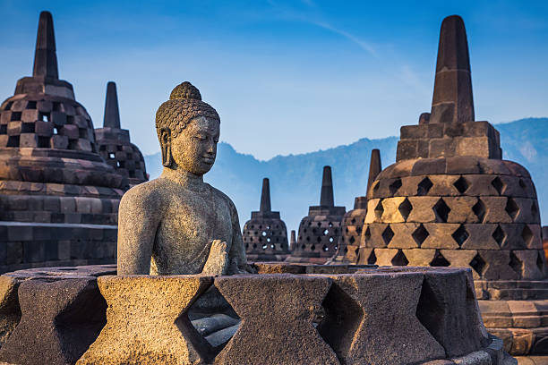
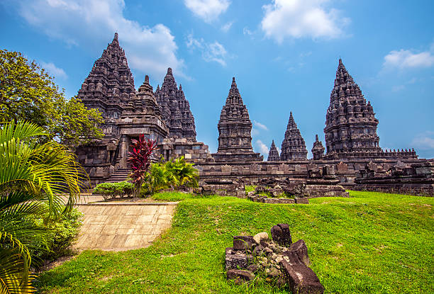
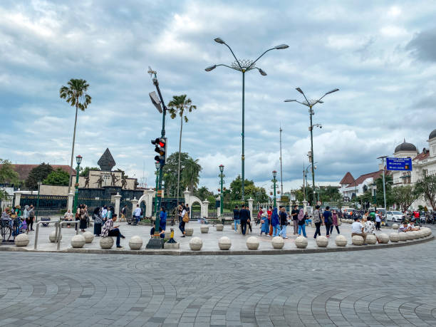
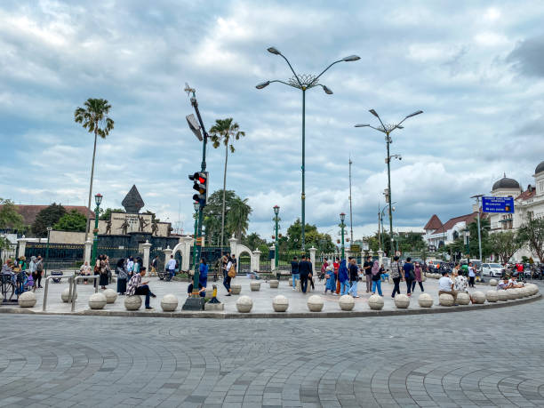
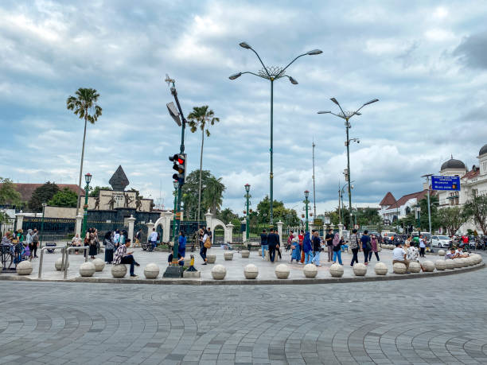

Tentang Yogyakarta
Yogyakarta adalah kota istimewa di Indonesia yang kaya akan warisan budaya Jawa. Dikenal sebagai pusat seni dan budaya Jawa klasik, Yogyakarta menawarkan perpaduan unik antara tradisi dan modernitas. Kota ini juga menjadi gerbang menuju candi-candi megah seperti Borobudur dan Prambanan.
Highlight Wisata
- Keraton Yogyakarta - Istana resmi Kesultanan Yogyakarta
- Candi Borobudur - Candi Buddha terbesar di dunia
- Candi Prambanan - Kompleks candi Hindu megah
- Malioboro - Jalan terkenal untuk belanja dan kuliner
- Taman Sari - Kompleks pemandian kerajaan dari abad ke-18
Informasi Penting
Waktu Terbaik Berkunjung
April-Oktober (musim kemarau)
Akses
Bandara Internasional Yogyakarta (Adisutjipto)
Bahasa
Bahasa Indonesia, Jawa, Inggris terbatas
Galeri Foto


 

